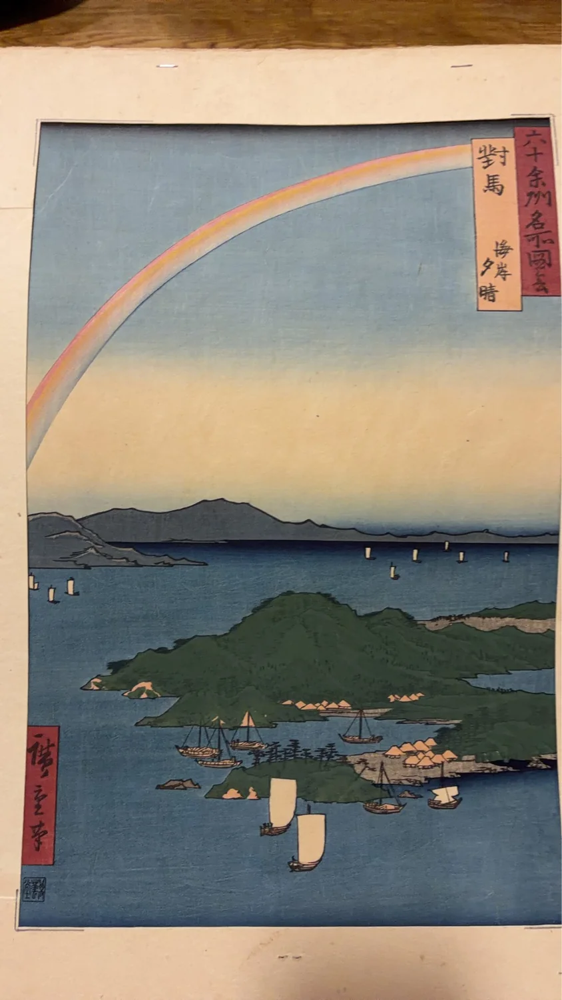

読みもの
歌川広重《六十余州名所図会 対馬 海岸夕晴》を読む ――海と空が広がる対馬の風景
歌川広重「六十余州名所図会」の一図《対馬 海岸夕晴》を入口に、 シリーズの成り立ちと対馬の風景をたどります。
お知らせ一覧へ戻る
江戸時代を代表する浮世絵師、歌川広重。
東海道や江戸の風景を描いた作品で広く知られる広重は、日本各地の名所を取り上げた「六十余州名所図会」という揃物も制作しました。
その一図として描かれたのが、《対馬 海岸夕晴》です。
海に囲まれた対馬の景観を、縦長の画面のなかに描いた作品です。本稿では、この一図を入口として「六十余州名所図会」というシリーズと、広重が描いた対馬の風景を見ていきます。
《対馬 海岸夕晴》とは
《対馬 海岸夕晴》は、歌川広重（初代）の「六十余州名所図会」に含まれる一図です。
国立国会図書館の「錦絵と写真でめぐる日本の名所」でも、「六十余州名所図会 対馬 海岸夕晴」として紹介されています。
題名にある「対馬」は、現在の長崎県に属する対馬を指します。
対馬は九州の北方、玄界灘に位置する島です。大陸との距離が近く、古くから大陸文化を受け入れる窓口となり、朝鮮との交流・交易においても重要な位置を占めてきました。
広重は、その対馬を「海岸夕晴」という題で描いています。
「六十余州名所図会」とは
「六十余州名所図会」は、初代歌川広重が嘉永6年（1853）から安政3年（1856）にかけて制作した錦絵のシリーズです。
「六十余州」とは、近代の都道府県制度が成立する以前に使われていた、日本の律令制に基づく地方行政区分に由来する呼び方です。
シリーズでは、五畿内、東海道、東山道、北陸道、山陰道、山陽道、南海道、西海道に属する68か国の名所が取り上げられました。
さらに江戸の「浅草市」を加えた69図と、梅素亭玄魚による目録を合わせ、全70図で構成されています。
国立国会図書館には「大日本六十餘州名勝圖會」の資料も残されており、安政3年（1856）の資料について、作者を一立齋廣重、出版者を越村屋平助とする書誌情報を確認できます。
日本各地を一つのシリーズとして眺められるところが、「六十余州名所図会」の大きな魅力の一つです。
画面から見る《対馬 海岸夕晴》
《対馬 海岸夕晴》でまず目を引くのは、画面の大きな部分を占める空と海の広がりです。
縦長の画面を使いながら、広重は海岸の地形、海、遠景、そして空を一つの風景として組み立てています。
画面を上から下へ追っていくと、空の広がりから海へ、そして手前の景観へと視線が移動します。
現代の写真のように風景をそのまま切り取るというより、どの部分を大きく見せ、どの部分を遠くに置くかによって、土地の印象そのものを一枚の画面に凝縮しているように見ることができます。
海と島の風景
対馬は海に囲まれた島です。
国立国会図書館も対馬を「九州の北方、玄界灘に位置する島」と紹介しています。
《海岸夕晴》という題名からも、この作品で海岸の景観が重要な主題となっていることが分かります。
海と陸地をどのように配置しているのか。遠くの景色と手前の景色をどのように重ねているのか。
そうした点に注目すると、単なる「名所案内」とは違った広重の風景表現を楽しむことができます。
「夕晴」という言葉
題名には「夕晴」とあります。
作品を見る際には、夕方という時間帯を広重がどのような色彩や空間構成で表そうとしたのかにも注目できます。
ただし、現在残されている浮世絵は、保存状態や摺り、退色などによって色の見え方が異なる場合があります。
そのため、現在目にしている一枚の色彩だけから、制作当初の色や意図を断定することには注意が必要です。
広重が描いた「対馬」
広重がこのシリーズで取り上げたのは、江戸や東海道周辺だけではありません。
「六十余州名所図会」では、日本各地の名所が一国一図を基本として次々に登場します。
その中で対馬は、日本列島の西端に近く、大陸との交流の歴史を持つ島として位置しています。
国立国会図書館は、対馬が古くから大陸文化の窓口となり、朝鮮との交易が盛んだったことを紹介しています。
江戸の人々にとって簡単に訪れることのできない遠方の土地も、一枚の錦絵を通じて眺めることができる。
「六十余州名所図会」は、そうした江戸時代の「日本各地を見る」という楽しみを現代に伝えてくれるシリーズでもあります。
時継舎掲載の《対馬 海岸夕晴》について
時継舎では、《六十余州名所図会 対馬 海岸夕晴》の一枚を掲載しています。
ここで紹介している作品については、写真および現在確認できている情報をもとに掲載しています。
版画は同じ図柄でも、摺りの時期、版の状態、紙、色彩、保存状態などによって個体差があります。
そのため時継舎では、十分な確認ができていない段階で、真作・初摺・江戸期オリジナル・後摺などを断定する表記は行っていません。
今後、追加調査によって確認できた事項があれば、作品ページの情報を更新していきます。
同じシリーズの《安房 小湊内浦》
時継舎では、同じ「六十余州名所図会」から、もう一つの作品も掲載しています。
《六十余州名所図会 安房 小湊内浦》です。
対馬が日本列島の西方に位置する島の景観を描くのに対し、安房は現在の千葉県南部にあたる地域です。
同じ広重、同じシリーズでありながら、それぞれの土地がどのように描き分けられているのか。
二つの作品を見比べることで、「六十余州名所図会」を一枚の作品ではなく、日本各地をめぐるシリーズとして楽しむことができます。
一枚から、シリーズへ
《対馬 海岸夕晴》を一枚だけ眺めても、海と島がつくる印象的な風景を楽しむことができます。
しかし、その一枚が「六十余州名所図会」という大きなシリーズの一部であることを知ると、見え方は少し変わります。
対馬の次にはどの土地が描かれているのか。
別の国では海、山、川、町、人々の営みがどのように表現されているのか。
一枚の浮世絵から別の一枚へ。
時継舎でも、作品そのものだけでなく、その背景にある土地や時代、シリーズとのつながりを少しずつ紹介していきます。